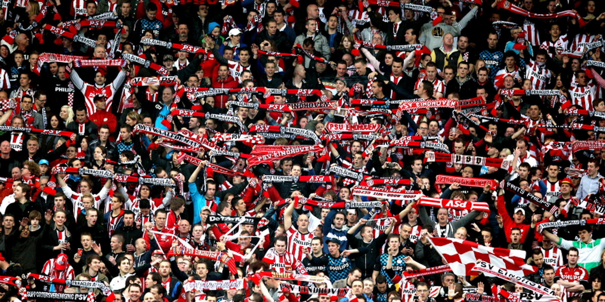
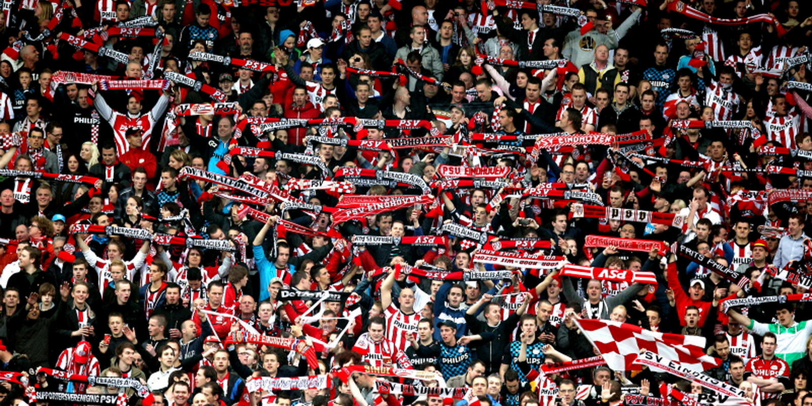

Wat zijn cookies?
Cookies zijn kleine bestanden die jouw voorkeuren tijdens het surfen onthouden en opslaan op je eigen computer.
Wat doen cookies?
Cookies hebben twee functies. In de eerste plaats helpen ze je bij het surfen door inlognamen, wachtwoorden en voorkeuren - zoals de taalinstelling - te onthouden.
Daarnaast zijn er cookies die de websites die je bezoekt registreren en zo een inschatting maken van jouw interesses.
Met die informatie kunnen adverteerders en websitebeheerders voor jou interessante advertenties in een website plaatsen. Bovendien kunnen cookies voorkomen dat je steeds dezelfde advertentie ziet.
Cookies in-/uitschakelen
Als je niet wilt dat er cookies worden geplaatst, dan kun je het opslaan daarvan tegengaan.
Als je meerdere computers hebt en/of van meerdere browsers gebruik maakt, dien je de cookies per computer en/of browser apart uit te schakelen.
Wat gebeurt er als ik de cookies uitzet?
Dankzij reclame kun je de meeste websites gratis bezoeken. En dankzij cookies worden de advertenties beter afgestemd op jouw interesses.
Zet je de cookies uit, dan ontvang je nog steeds reclame, alleen is deze dan niet meer afgestemd op jouw surfgedrag. Als je de cookies die je voorkeuren onthouden uitschakelt, moet je je instellingen, zoals je wachtwoord en inlognaam, steeds opnieuw intypen.
• Instellingen worden niet meer onthouden.
• Inloggegevens worden niet meer opgeslagen, zodat je ze elke keer opnieuw moet invoeren.
• Je kunt niet meer direct informatie delen via social media.
• Je zult gewoon advertenties blijven zien, maar deze zijn niet meer op je interesses afgestemd.
 
